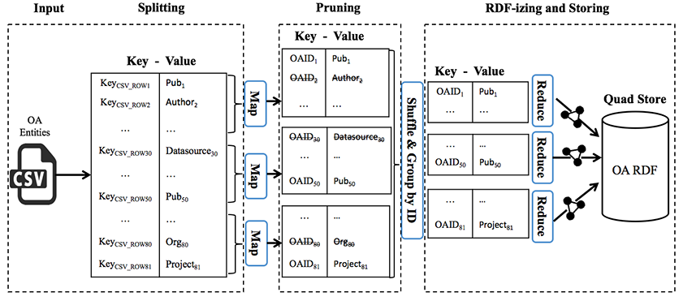

OpenAIRE, the Open Access Infrastructure for Research in Europe, enables search, discovery and monitoring of the publications and datasets from 100,000+ research projects. Increasing the reusability of the OpenAIRE research metadata, connecting them to other open data about projects, publications, people and organizations, and reaching out to further related domains requires better technical interoperability, which we aim at achieving by exposing the OpenAIRE Information Space as Linked Data. We present a scalable and maintainable architecture that converts the OpenAIRE data from its original HBase NoSQL source to RDF. We furthermore explore how this novel integration of data about research can facilitate scholarly communication.
OpenAIRE (OA) is the European Union's flagship project for an Open Access Infrastructure for Research; it enables search, discovery and monitoring of scientific outputs (more than 13M publications, 12M authors and scientific datasets), harvested from over 6K data providers and linked to more than 100K research projects funded by EU and Australian bodies. To increase the interoperability of the OA Information Space (IS), we have published its data as Linked Open Data (LOD). In our previous work , we have specified a vocabulary for the OA LOD and experimented with different implementations of publishing the OA IS as LOD. Based on this preliminary work, we have developed and now present a scalable implementation over Hadoop that can efficiently address the publishing of large volumes of scholarly data, through which OA can offer three different LOD services: i. fine-grained exploration of data records about individual entities in the OA IS, ii. a downloadable all-in-one data dump, and iii. interactive querying via a SPARQL endpoint, i.e., a standardized query interface. On top of this setup we can add further services, e.g., for visual exploration or data analysis, and proceed with linking the OA data to related datasets.
The OA infrastructure is a data aggregator rather than a primary producer, i.e., it processes information from many different repositories in arbitrary harvesting cycles. In this setting, the process of publishing and interlinking scholarly data as LOD has revealed a number of interesting technical challenges. A typical problem is related to the persistent identification of published entities. Harvesting information from multiple, inherently dynamic and heterogeneous sources leads to duplication of content; thus, deduplication before publishing aggregated data is a common practice. Deduplication identifies groups of entities that represent the same real-world object (e.g. author) based on schema and content characteristics and merges them into one representative record. Content harvesting and deduplication are repeatedly performed to sync the IS with updated information at the sources; however, these processes do not guarantee persistent identifiers for the disambiguated entities. Thus, we enhanced the OA Data Model by temporal characteristics to ease tracking changes between updates in the IS. A second challenge relates to the performance of the LOD production process and its scalability to the huge data volume. The process must be performed efficiently, such that it seamlessly integrates into the OA data lifecycle, avoiding the provisioning of outdated LOD. Therefore, we pursue a parallel Map-Reduce processing strategy.
Our first step was to model the Linked Data vocabulary (ontology) and
the mappings between the OA Data model entities and the ontology classes.
For the publishing process, we convert and assign URIs to all individual records except representative ones.
This is performed incrementally, using temporal annotations, such that
only new or updated records are converted.
The result is stored in an RDF triple store.
Next, we process and store all information concerning duplicate relations (e.g.
sameAs) between the aforementioned records. The reason for excluding representative records is
that their identification is based on the duplicate records they are derived
from, which, given the evolving nature of the sources and the varying
performance of deduplication, is not persistent across harvesting cycles (even if the original entities stay intact). Instead, we choose to
publish all the original records and explicitly mark them as duplicates with the owl:sameAs
property. Our approach has been implemented as Hadoop workflow, and integrated into the OA production system as a parallel job to all other data processing activities.
The OA LOD framework aims at providing a set of services for publishing OA resources as LOD and providing an infrastructure for data access, retrieval and citation (e.g., a SPARQL endpoint or a LOD API);
Furthermore, one of its main purposes is interlinking with popular LOD datasets and services (DBLP, ACM, CiteSeer, DBpedia, etc.) and enriching the OA IS with information from the LOD cloud. The OA LOD is downloadable as a dump through http://lod.openaire.eu and queryable via a SPARQL endpoint. According to the recommended best practices , we use content negotiation to handle incoming HTTP requests: requests from Linked Data clients, which ask for an RDF-specific media type (i.e., application/rdf+xml) in their HTTP header, are answered by the RDF store, while all other HTTP requests to http://lod.openaire.eu are answered with human-readable HTML pages.
An major requirement for designing the OA LOD vocabulary was to reuse
concepts, properties and terms from existing standards and
initiatives, to maximize the interoperability of the OA LOD
with other data sources.
Given the rich OA data model, the main challenges were to identify the most suitable vocabularies for reuse, but also to define our own,
i.e., OA specific vocabulary terms for attributes not captured by existing vocabularies.
As the schema of the OA LOD, we specified an OWL ontology by mapping the entities of the OA data model to OWL classes, and its attributes and relationships to OWL properties.
Vocabularies reused include Dublin Core for general metadata, SKOS for classification and CERIF for research organizations and activities.
We linked new, OA-specific terms to reused ones, e.g., by declaring Result a superclass of http://purl.org/ontology/bibo/AcademicArticle and http://www.w3.org/ns/dcat#Dataset.
For the URI scheme, our goal was to assign user-friendly URIs; though this was partially impossible because of inherent restrictions of OA's current way of identifying entities.
As base URI, we use our own domain with the data path to distinguish actual resources from pages about the resources, i.e., http://lod.OpenAIRE.eu/data/.
Subsequently, we add the type of each resource (Datasource, Organization, Person, Project and Result) represented by a URI, and finally add the unique identification of that resource, i.e., http://lod.openaire.eu/data/organization/{id}.
In the following, we present the technical details of our framework. The data of the OA IS is available in three source formats: HBase (a NoSQL database), XML and CSV. A comparison of mappings from each of these three source formats to RDF led to the observation that mapping from HBase may be faster in terms of performance, however, mapping from CSV is not significantly slower but at the same time much more maintainable; it is thus our preferred option .
The first mapping step involves the RDFization process. This process takes as input two CSV files, one with all records, and a second one with all the relations about duplicate records, converts them to RDF and stores them as separate named graphs in our RDF triple store. The first graph, which holds all OA entities, is the largest graph and is updated incrementally based on temporal properties that we have introduced in both the OA vocabulary and data model while the second graph, which holds all the relationships, is a small graph that is dropped and recreated in every run of our workflow following the output of the deduplication process.

shows the functionality of our approach in terms of M/R jobs. In the first step, the CSV file that contains the entities is loaded (input) and automatically split (splitting) by the Hadoop framework into smaller chunks and distributed between the mappers. The entities are split in key-value pairs, where the key is an ID auto-assigned by the framework and the value is the actual entity. Then, mappers parse the CSV and map the entities from the CSV according to map(ID, value) where ID=OAID{ID} and value=entity_attributes. In that stage, we omit entities whose last modification date precedes the last execution date of the process (pruning). The output is usually a small subset of our initial input, containing only the entities that have changed since the last execution of our workflow.
Subsequently, the output is shuffled and grouped by ID and distributed to the reducers.
ID=OAID{ID} was selected as key because Hadoop's default hashcode-based partitioning algorithm distributes entities uniformly to reducers based on their IDs (ID.hashCode() mod numReduceTasks).
Finally, the reducers extract each input entity's attributes, convert them to RDF and store them directly in the RDF store (RDFizing and storing).
We insert the data directly to the RDF store instead of saving it to HDFS and then
loading it to our database. With the use of appropriate connection pooling, our RDF store (OpenLink Virtuoso) can scale and handle efficiently the aforementioned approach largely automatically.
OAI2LOD Server is a tool designed to publish Linked Data content from aggregators and repositories which are compatible with the Open Archives Initiative Protocol for Metadata Harvesting (OAI-PMH). While it follows most of the Linked Data directives concerning URI design, it currently does not sufficiently address the problem of URI persistence and data volume, in terms of scalability .
Among the first adopters of the Linked Data approach in the digital libraries community was the Library of Congress (LoC) . It exposes millions of data records from 175 libraries describing various types of resources, including persons, books, authors, subjects, etc. The records were made available by building a straightforward RDF wrapper on top of the integrated library system.
Concerning Data Aggregators, one of the biggest efforts of publishing RDF data from aggregated data is data.europeana.eu , with its data source being the European Union's digital library Europeana . There is an ongoing effort of making Europeana metadata available as LOD; however, scaling issues are again not addressed sufficiently and RDF stores are used for read-only access after an initial dump import. Moreover, the persistence of the URIs is a constant challenge in that approach: Despite having a robust URI design, Europeana is an aggregator and its collections are constantly being re-harvested, which leads to frequent changes of URIs.
We have presented the architecture that performs the efficient large-scale translation of the OA research metadata to Linked Data at http://lod.openaire.eu. We will extend this setup to interlink OpenAIRE with related datasets. While the implementation of the efficient incremental interlinking workflow is still in progress, we have already identified candidate datasets to interlink with and are in the process of determining rules to match OpenAIRE entities to entities in other datasets, and we made an initial collection of scholarly communication use cases that our interlinked datasets will support.
Acknowledgments. This work has been partially funded by EU project OpenAIRE2020 (643410) and DFG grant AU 340/9-1.
Papadakis, G., Alexiou, G., Papastefanatos, G., & Koutrika, G. (2015). Schema-agnostic vs schema-based configurations for blocking methods on homogeneous data. Proceedings of the VLDB Endowment, 9(4), 312-323.
Haslhofer, B., & Schandl, B. (2008). The OAI2LOD Server: Exposing OAI-PMH metadata as linked data.
Heath, T. & Bizer, C. (2011). Linked data: Evolving the web into a global data space. Synthesis lectures on the semantic web: theory and technology. 1(1): 1-136
Haslhofer B., & Isaac A. (2011). data.europeana.eu: The Europeana linked open data pilot. In: International Conference on Dublin Core and Metadata Applications 2011 Sep 21. 94-104.
Vahdati, S., Karim, F., Huang, J.-Y., & Lange, C. (2015). Mapping Large Scale Research Metadata to Linked Data: A Performance Comparison of HBase, CSV and XML. In Metadata and Semantics Research, CCIS 544, Springer.
Vahdati, S., Lange, C., Alexiou, G., & Papastefanatos, G., Deliverable 8.2-OpenAIRE LOD Services, 2015.
Summers, E., Isaac, A., Redding, C., & Krech, D. (2008). LCSH, SKOS and linked data. arXiv preprint arXiv:0805.2855.
For the moment, this URL redirects to http://beta.lod.openaire.eu to indicate that the OpenAIRE LOD Services are currently in beta.